온실가스관리기사 (2020-09-26 기출문제)
1과목: 기후변화개론
1. 기후시스템 중 에어로졸에 대한 설명 중 틀린 것은?
- 에어로졸의 크기는 약 수백 나노미터부터 수십 마이크로미터에 이르기까지 그 범위가 넓다.
- 에어로졸은 불규칙한 친수성, 광학적 특성, 다른 종류의 에어로졸과 혼합 등의 복잡한 과정을 거치기 때문에 그 특성을 파악하기 어렵다.
- 에어로졸은 크게 인류기원 에어로졸과, 자연기원 에어로졸로 나눌 수 있다.
- 1주일 내외의 짧은 에어로졸의 잔류시간으로 인해 시공간적 분포는 오염배출원을 중심으로 좁다.
(정답률: 92%)

2. 제2차 국가 기후변화 적응대책 수립 시 기후변화 리스크의 기반 선진화된 적응관리체계 마련을 위한 단계별 기후변화 리스크 평가절차가 순서대로 바르게 나열된 것은?
- 분석→파악→평가→우선순위 설정
- 파악→분석→평가→우선순위 설정
- 분석→파악→우선순위 설정→평가
- 파악→분석→우선순위 설정→평가
(정답률: 80%)
3. 온실가스 배출량 정량화 단계가 아닌 것은?
- 배출량 계산
- 활동데이터 선택 및 수집
- 배출계수 선택 또는 개발
- 프로젝트 개발
(정답률: 92%)
4. 온실가스에너지 목표관리제의 협의 및 설정에 관한 설명으로 옳은 것은?
- 목표관리 대상 기간은 2년 단위이다.
- 발전과 철도는 BAU 대비 총량제한으로 한정한다.
- 목표설정방식은 과거실적 기반 및 벤치마크기반 2단계로 구분한다.
- 기준년도 배출량의 시간기준은 관리업체로 최초 지정된 해의 직전 연도를 포함한 5년간 연평균 배출량으로 설정한다.
(정답률: 66%)
5. 기후변화에 의한 잠재적인 영향과 잔여영향에 관한 설명으로 가장 적합한 것은?
- 잠재적인 영향은 적응을 고려할 경우 나타나는 기후변화로 인한 영향을 의미하며, 잔여영향은 적응으로 회피될 수 있는 영향부분을 포함한 영향을 말한다.
- 잠재적인 영향은 적응을 고려할 경우 나타나는 기후변화로 인한 영향을 의미하며, 잔여영향은 적응으로 회피될 수 있는 영향부분을 제외한 영향을 말한다.
- 잠재적인 영향은 적응을 고려하지 않을 경우 나타나는 기후변화로 인한 영향을 의미하며, 잔여영향은 적응으로 회피될 수 있는 영향 부분을 포함한 영향을 말한다.
- 잠재적인 영향은 적응을 고려하지 않을 경우 나타나는 기후변화로 인한 영향을 의미하며, 잔여영향은 적응으로 회피될 수 있는 영향 부분을 제외한 영향을 말한다.
(정답률: 84%)
6. 화석 연료의 연소로 인해 야기된 전 지구적 기후 변화를 보여주는 심벌로 인식되고 있는 아래 그림은 마치 톱니처럼 주기적으로 위 아래로 진동하면서 오른쪽 위를 향해 뻗어간다. 이 그림의 명칭과 그 원인은?
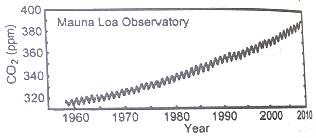
- Keeling curve, 식물의 광합성에 따른 계절적인 차이
- Keeling curve, 기온증가로 인한 빙하의 감소 차이
- James curve, 폭우와 폭설에 따른 강수의 차이
- James curve, 태양복사에 의한 알베도의 차이
(정답률: 84%)
7. 우리나라의 메탄(CH4) 배출량 중에서 가장 비중이 높은 분야는?
- 에너지 분야
- 폐기물 분야
- 산업공정 분야
- 농업 분야
(정답률: 63%)
8. 극한기후지수에 대한 설명 중 옳지 않은 것은?
- 서리일수 : 일최고기온이 0℃ 미만인 날의 연중 일수
- 열대야일수 : 일최저기온이 25℃ 이상인 날의 연중 일수
- 폭염일수 : 일최고기온이 33℃ 이상인 날의 연중 일수
- 호우일수 : 일강수량이 80mm 이상인 날의 연중 일수
(정답률: 67%)
9. IPCC 5차 평가보고서에 따른 지구복사강제력(RF)이 높은 순서에서부터 낮은 순서대로 가장 적합하게 나열된 것은?
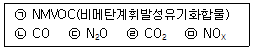
- ㉢→㉠→㉣→㉤→㉡
- ㉣→㉡→㉢→㉠→㉤
- ㉢→㉡→㉤→㉠→㉣
- ㉣→㉠→㉢→㉡→㉤
(정답률: 70%)
10. 1992년 체결된 기후변화에 관한 유엔기본협약의 이론적 틀을 마련하고, 기후변화와 관련된 과학적 연구결과를 종합적으로 검토하는 국제기구는?
- 기후변화에 관한 정부간 패널(IPCC)
- 세계기상기구(WMO)
- 유엔환경계획(UNEP)
- 유엔개발계획(UNDP)
(정답률: 73%)
11. 다음의 탄소시장에 관한 내용 중 틀린 것은?
- 배출권을 배분하는 과정을 배출권할당 이라고 한다.
- 개별 경제주체에 대해 배출권을 할당하는 방식 중 무상배분 방식은 배출권을 과거 배출량을 기준으로 비용 없이 발행하여 배분하는 방식이다.
- 탄소배출권을 리스크에 따라 분류할 경우 2차 시장은 등록된 CDM사업으로부터 예상되는 배출권을 거래하는 시장이다.
- 배출권거래제를 통하여 발행되는 배출권으로는 AAU, EAU 등이 대표적 배출권이다.
(정답률: 71%)
12. 우리나라 국가배출량 통계에 대한 설명 중 옳지 않은 것은?
- 국가 온실가스 관리위원회 심의·의결 후 확정된다.
- IPCC 제3차 보고서에서 제시한 지구온난화지수를 활용하여 산정된다.
- 활동자료 개선이나 산정방법론이 변경됨에 따라 매년 재계산 될 수 있다.
- 관장기관에서 산정 후, 환경부 온실가스 종합정보센터는 이를 수정·보완한다.
(정답률: 58%)
13. UNFCCC에서 규제하고 있는 온실가스가 아닌 것은?
- 수소불화탄소
- 이산화질소
- 육불화황
- 과불화탄소
(정답률: 85%)
14. 우리나라 기후변화 영향 중 식생변화로 가장 거리가 먼 것은?
- 개엽시기가 빨라진다.
- 개화시기가 지연된다.
- 고립된 고산대 식물이 멸종되기 쉽다.
- 고도가 낮은 곳의 온대성 식물이 산 위로 확장한다.
(정답률: 82%)
15. 2006 IPCC 가이드라인의 폐기물 부문에 포함되지 않은 것은?
- 고형 폐기물 매립에 의한 배출
- 고형폐기물의 소각 및 노천 소각에 의한 배출
- 분뇨 처리에 의한 배출
- 폐수 처리 및 배출
(정답률: 76%)
16. IPCC 가이드라인에 대한 다음 설명 중 틀린 것은?
- UNFCCC에서 국제표준으로 인정한 지침서이다.
- 국가온실가스 배출량 산정을 위한 지침서이다.
- 상향식 배출량 산정방식을 이용한다.
- 국제적 표준이 되는 온실가스 종류와 지구온난화 지수 등을 포함하고 있다.
(정답률: 80%)
17. 기후시스템에서 구름의 영향에 관한 설명으로 가장 적합한 것은?
- 구름과 온난화는 관련이 없다.
- 낮은 구름이 증가하면 온난화 효과가 크다.
- 낮은 구름보다 높은 구름이 증가하면 지구복사에너지를 더 많이 흡수한다.
- 현재까지는 온난화로 높은 구름이 감소할 가능성이 지배적인 것으로 알려져 있다.
(정답률: 70%)
18. 아산화질소 0.1톤, 메탄 1톤, 이산화탄소 20톤을 이산화탄소 상당량톤(tCO2-eq)으로 환산한 값은? (단, 아산화질소(N2O)와 메탄(CH4)의 GWP는 각각 310, 21이다.)
- 52
- 53
- 62
- 72
(정답률: 77%)
19. 기후변화에 대한 국제기구의 논의과정에 대한 설명으로 옳지 않은 것은?
- 국제사회가 기후변화문제를 환경문제로 처음 논의하기 시작한 것은 1972년 스톡홀롬에서 개최된 인간환경회의(UN Conference on the Human Environment)로 볼 수 있다.
- WMO(세계기상기구)와 UEP는 1988년 공동으로 IPCC(기후변화 정부간 패널)을 설립하고 지구온난화 문제에 각국 정부의 연구 및 대응역량을 결집하였다.
- IPCC는 1990년 제2차 세계기후회의에서 제1차 기후변화보고서를 발표하고 여기에서 기후변화문제를 다루기 위한 국제협약이나 규범의 제정을 권고하였다.
- IPCC는 1990년 제2차 세계기후회의에서 국제협약이나 규범의 권고에 따라 1999년 브라질 리우에서 개최된 유엔환경개발회의(UNCED)에서 기후변화협약(UNFCCC)을 체결하고 선진국의 온실가스 감축목표를 명확히 합의하였다.
(정답률: 53%)
20. ISO(국제표준(ISO 14064) 지침 원칙에서 배출량 산정보고서와 관련하여 충족해야 하는 4가지 조건과 거리가 먼 것은?
- 완전성
- 추가성
- 정확성
- 일관성
(정답률: 91%)
2과목: 온실가스 배출의 이해
21. 온실가스 배출권거래제의 배출량 보고 및 인증에 관한 지침상 고형 폐기물의 생물학적 처리의 보고대상 배출시설과 거리가 먼 것은?
- 퇴비화시설
- 고도처리시설
- 부숙토 생산시설
- 혐기성 분해시설
(정답률: 64%)
22. 유리생산 활동의 용해공정 중 CO2가 배출되지 않는 원료는?
- 경소백운석
- 마그네사이트
- 철백운석
- 능철광
(정답률: 34%)
23. 도로부문의 보고대상 배출시설 중에서 배기량 1530 cc인 승용자동차가 해당하는 것은?
- 경형
- 소형
- 중형
- 대형
(정답률: 61%)
24. 온실가스 배출권거래제의 배출량 보고 및 인증에 관한 지침상 제트연료를 사용하는 항공기의 온실가스 배출량 산정 순서가 알맞은 것은?
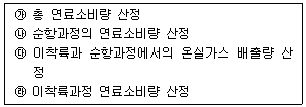
- ㉮→㉯→㉱→㉰
- ㉯→㉱→㉮→㉰
- ㉱→㉯→㉮→㉰
- ㉮→㉱→㉯→㉰
(정답률: 56%)
25. 온실가스·에너지 목표관리 운영 등에 관한 지침상 질산 생산에서 온실가스가 발생되는 주요 공정은 제1산화 공정의 부반응에 의한 것이다. 다음 중 제1산화 공정의 반응과 가장 거리가 먼 것은?
- 2NH3→N2+3H2
- 4NH3+6NO→5N2+6H2O
- NO(g)+0.5O2→NO2(g)+13.45kcal
- NH3+4NO→2.5N2O+1.5H2O
(정답률: 69%)
26. 온실가스·에너지 목표관리 운영 등에 관한 지침상 최적가용기술(BAT) 개발 시 고려요소와 가장 거리가 먼 것은?
- 환경피해를 방지함으로써 얻을 수 있는 이익이 최적 가용기술을 적용하는데 필요한 비용보다 커야 한다.
- 폐기물의 발생을 적게 하고 폐기물 회수와 재사용 등을 촉진할 수 있는지 여부를 고려하여야 한다.
- 기술의 진보와 과학의 발전을 고려한다.
- 실증된 기술이라도 파일롯 규모인 경우는 원칙적으로 최적가용기술 범위에서 제외한다.
(정답률: 69%)
27. 온실가스 배출권거래제의 배출량 보고 및 인증에 관한 지침상 석유경제활동에서의 온실가스 배출량 보고 대상시설이 아닌 것은?
- 소성시설
- 수소제조시설
- 촉매재생시설
- 코크스 제조시설
(정답률: 67%)
28. 온실가스 배출권거래제의 배출량 보고 및 인증에 관한 지침상 다음 연료에 해당하는 것은?
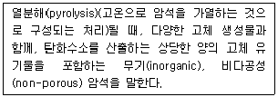
- 유모혈암(Oil Shale)
- 역청암(Tar Sands)
- 갈란 연탄(Brown Coal Briquettes)
- 점결탄(Coking Coal)
(정답률: 70%)
29. 온실가스 배출권거래제의 배출량 보고 및 인증에 관한 지침상 외부 스팀 공급업체에 공급받은 열(스팀)에 대한 간접배출량 산정·보고 범위로 가장 적합한 것은?
- 사업장 단위
- 전력 배출시설 단위
- 10MJ당 스팀사용 설비 단위
- 50GJ당 스팀사용 공정 단위
(정답률: 79%)
30. 직전연도 1년동안 가스보일러에서 사용한 LNG 사용량을 고지서를 통해 확인한 결과 1,100,000MJ이었다. 고지서에 제시된 총발열량은 44MJ/Nm3으로 되어 있었고, 에너지법의 별표에는 순발열량이 39.4MJ/Nm3이라고 알게 되었다. 아래의 정보를 토대로 산정된 온실가스 배출량(tCO2_eq)은? (단, 산정방식 : Tier 1, LNG IPCC 2006 배출계수(kg GHG/TJ) : CO2의 경우 561000, CH4의 경우 1, N2O의 경우 0.1)
- 75
- 65
- 55
- 45
(정답률: 28%)
31. 온실가스 배출권거래제의 배출량 보고 및 인증에 관한 지침상 연료전지의 배출활동 개요에 관한 설명으로 옳지 않은 것은?
- 연료전지는 외부에서 수소와 산소를 공급받아 수용액에서 전자를 교환하는 산화·환원 반응을 한다.
- 연료전지는 산화·환원 반응에서 생성된 화학적 에너지를 전기에너지로 변환시키는 발전장치이다.
- 연료전지는 물의 전기분해와는 다른 역반응으로 수소와 산소로부터 전기와 물을 생산한다.
- 수소를 생산하기 위하여 연료전지 후단에서 탄산과 물을 반응시키고 이 과정에서 CO2가 발생된다.
(정답률: 75%)
32. 온실가스 배출권거래제의 배출량 보고 및 인증에 관한 지침상 고체연료(고정연소) 연소의 산화계수 Tier 2에 대한 설명으로 ( )에 알맞은 것은?
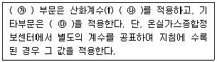
- ㉮ 에너지, ㉯ 0.99, ㉰ 0.995
- ㉮ 에너지, ㉯ 0.995, ㉰ 0.98
- ㉮ 발전, ㉯ 0.99, ㉰ 0.98
- ㉮ 발전, ㉯ 0.995, ㉰ 0.99
(정답률: 64%)
33. 철강생산의 고로공정 구성으로 ( )에 들어갈 부생가스로 옳은 것은?
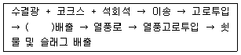
- COG
- BFG
- LDG
- FOG
(정답률: 63%)
34. 시멘트 생산 공정배출에서 배출량 산정방법에 필요한 자료가 아닌 것은?
- 클링커 생산에 따른 CO2 배출량
- 클링커 생산량당 CO2배출 계수
- 시멘트 킬른먼지(CKD) 생산량
- 석회 생산량
(정답률: 58%)
35. 온실가스 배출권거래제의 배출량 보고 및 인증에 관한 지침 상 일반보일러(고정연소)시설에서 석유류 연료 연소에 따른 CO2배출계수가 큰 순으로 올바르게 표기된 것은?
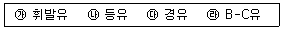
- ㉮ ＜ ㉯ ＜ ㉰ ＜ ㉱
- ㉮ ＜ ㉰ ＜ ㉯ ＜ ㉱
- ㉯ ＜ ㉮ ＜ ㉰ ＜ ㉱
- ㉯ ＜ ㉰ ＜ ㉮ ＜ ㉱
(정답률: 45%)
36. 온실가스 배출권거래제의 배출량 보고 및 인증에 관한 지침상 하·폐수 처리 및 배출의 보고대상 배출시설에 해당하지 않은 것은?
- 가축분뇨공공처리시설
- 공공하수처리시설
- 분뇨처리시설
- 부숙토처리시설
(정답률: 72%)
37. 온실가스 배출권거래제의 배출량 보고 및 인증에 관한 지침상 이동연소(도로)의 보고대상 배출시설에 해당하지 않는 것은?
- 경형 승용자동차
- 대형 승합자동차
- 대형 화물자동차
- 경형 이륜자동차
(정답률: 82%)
38. 매립시설의 기능을 3가지로 대별한 구분으로 거리가 먼 것은?
- 저류기능
- 회복기능
- 차주기능
- 처리기능
(정답률: 66%)
39. 고형 폐기물 매립시설에서 매립시설별 유형별 메탄 보정계수가 적절한 것은?
- 관리형 매립지(혐기성) - 0.8
- 관리형 매립지(준호기성) - 0.5
- 비관리형 매립지(매립고 5m 이상) - 0.6
- 비관리형 매립지(매립고 5m 미만) - 0.3
(정답률: 62%)
40. 암모니아 생산공정 – 수증기개질법의 1차 개질에서 생산되는 중간물질과 가장 거리가 먼 것은?
- 이산화탄소
- 산소
- 수소
- 메탄
(정답률: 43%)
3과목: 온실가스 산정과 데이터 품질관리
41. 과거에 제출한 명세서를 수정하여 검증기관의 검증을 거쳐 관장기관에게 재제출하여야 하는 경우로 적절하지 않은 것은?
- 관리업체의 권리와 의무가 승계된 경우
- 배출량 등의 산정방법론이 변경되어 온실가스 배출량 등에 변경이 유발된 경우
- 동일한 배출활동 및 활동자료를 사용하는 소규모 배출시설의 일부가 신증설 또는 폐쇄되었을 경우
- 환경부 장관으로부터 사업장 고유 배출계수를 검토·확인을 받거나, 그 값이 변경된 경우
(정답률: 43%)
42. 다음 중 품질보증(Quality Assurance) 활동 요소가 아닌 것은?
- 내부감사 담당자, 책임자 지정
- 산정 과정의 적절성
- 배출량 정보 자체 검증
- 품질감리
(정답률: 48%)
43. 온실가스 배출권거래제의 배출량 보고 및 인증에 관한 지침상 ( )에 들어갈 용어로 가장 적합한 것은?
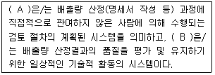
- A: 품질보증, B: 품질관리
- A: 품질관리, B: 품질보증
- A: 현장검증, B: 리스크 분석
- A: 리스크 분석, B: 현장검증
(정답률: 84%)
44. 온실가스 배출권거래제의 배출량 보고 및 인증에 관한 지침상 항공부문의 이동연소에 의한 온실가스 배출량 산정기준에 관한 설명으로 옳지 않은 것은?
- 배출량 산정방법론은 Tier 1, 2, 3의 세등급으로 구분할 수 있다.
- Tier 2수준의 배출량 산정방법론은 제트연료를 사용하는 항공기에 적용된다.
- Tier 1수준에서 활동자료의 측정불확도는 ±7.5% 이내이다.
- Tier 2수준에서 활동자료의 측정불확도는 ±5.0% 이내이다.
(정답률: 62%)
45. 온실가스 배출권거래제의 배출량 보고 및 인증에 관한 지침상 온실가스 배출량 등의 산정절차에 해당되지 않은 것은?
- 조직 경계의 설정
- 모니터링 유형 및 방법의 설정
- 배출량 산정 및 모니터링 체계의 구축
- 목표설정
(정답률: 82%)
46. 배출량 산정등급에서 국가고유 배출계수 및 발열량 등 일정부분 시험분석을 통하여 개발한 매개변수 값을 활용하는 배출량 산정방법은?
- Tier 1
- Tier 2
- Tier 3
- Tier 4
(정답률: 70%)
47. 온실가스 배출권거래제의 배출량 보고 및 인증에 관한 지침상 A업체에서는 전기로에서 흩뿌림 충진방식(Sprinkle charging)으로 600℃조건에서 합금철이 연간 3700ton이 생산되고 있다. 아래 단서 조항에 의거 Tier 1에 따른 연간 온실가스 배출량(tCO2-eq)은? (단, 생산된 합금철은 65% Si로 CO2 배출계수는 3.6tCO2/t-합금철이며, CH4 배출계수는 1.0kgCH4/t-합금철이다.)
- 13397.700
- 91020.000
- 8708.5⑤
- 59163.000
(정답률: 37%)
48. 온실가스 배출권거래제의 배출량 보고 및 인증에 관한 지침상 활동자료 수집에 따른 모니터링 유형에 관한 설명으로 옳지 않은 것은?
- B유형은 배출시설별로 주기적으로 교정검사를 실시하는 내부 측정기가 설치되어 있을 경우 해당 측정기기를 활용하여 활동자료를 결정하는 방법이다.
- C유형은 연료 및 원료의 공급자가 상거래 등의 목적으로 설치·관리하는 측정기기를 이용하여 배출시설의 활동자료를 모니터링하는 방법이다.
- B유형은 구매량 기반 측정기기와 무관하게 배출시설 활동자료를 교정된 자체 측정기기를 이용하여 모니터링 하는 방법이다.
- C유형은 각 배출시설별 활동자료를 구매 연료 및 원료 등의 메인 측정기기 활동자료에서 타당한 배분방식으로 모니터링하는 방법이다.
(정답률: 57%)
49. 온실가스 배출권거래제의 배출량 보고 및 인증에 관한 지침상 암모니아 생산 시설의 순서로 알맞은 것은?
- 나프타 탈황→가스전환→나프타 개질→암모니아 합성→가스정제
- 나프타 개질→가스전환→가스정제→암모니아 합성→나프타 탈황
- 암모니아 합성→나프타 탈황→나프타 개질→가스전환→가스정제
- 나프타 탈황→나프타 개질→가스전환→가스정제→암모니아 합성
(정답률: 64%)
50. 온실가스·에너지 목표관리 운영 등에 관한 지침상 외부에서 공급을 받아 전력을 사용하는 A사업장은 2016년에 10⑤00kWh, 2017년에 110600kWh를 사용하였다. A사업장이 2017년 외부전력 사용으로 인한 온실가스 배출량(tCO2-eq)은? (단, 전력 배출계수 및 GWP는 다음과 같다.)
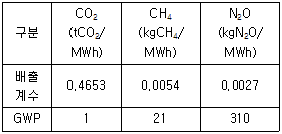
- 47
- 52
- 62
- 73
(정답률: 58%)
51. 온실가스·에너지 목표관리 운영 등에 관한 지침상 관리업체 지정과 관련하여 건물이 건축물 대장 또는 등기부에 각각 등재되어 있거나 소유지분을 달리하고 있는 경우에 관한 사항으로 옳지 않은 것은?
- 인접한 대지에 동일 법인이 여러 건물을 소유한 경우에는 한 건물로 본다.
- 건물의 소유구분이 지분형식으로 되어 있을 경우에는 지분별로 건물의 소유지분을 구분한다.
- 에너지 관리의 연계성이 있는 복수의 건물은 한 건물로 본다.
- 동일 부지 내에 있거나 인접 또는 연접한 집합건물이 동일한 조직에 의해 에너지 공급·관리 또는 온실가스 관리 등을 받을 경우에도 한 건물로 간주한다.
(정답률: 64%)
52. 온실가스 배출권거래제의 배출량 보고 및 인증에 관한 지침상 온실가스 측정 불확도 산정절차를 4단계로 구분할 때, 다음 중 2단계에 해당하는 것은?
- 매개변수 분류 및 검토, 불확도 평가 대상 파악
- 활동자료, 배출계수 등의 매개변수에 대한 불확도 산정
- 배출시설별 온실가스 배출량에 대한 상대불확도 산정
- 불확도 평가 체계 수립
(정답률: 53%)
53. 온실가스·에너지 목표관리 운영 등에 관한 지침상 교통부문의 조직경계 결정방법으로 틀린 것은?
- 동일법인 등이 여객자동차운수사업자로부터 차량을 일정기간 임대 등의 방법을 통해 실질적으로 지배하고 통제할 경우에는 당해 법인 등의 소유로 본다.
- 일반화물자동차 운송 사업을 경영하는 법인등이 허가 받은 차량은 차량 소유 유무에 상관없이 당해 법인 등이 지배적인 영향력을 미치는 차량으로 본다.
- 관리업체 지정을 위해 온실가스 배출량 등을 산정할 때에는 항공 및 선박의 국제 항공과 국제 해운부문을 포함한다.
- 화물운송량이 연간 3천만 톤-km 이상인 화주기업의 물류부문에 대해서는 교통 부문 관장기관인 국토교통부에서 다른 부문의 소관 관장기관에게 관련 자료의 제출 또는 공유를 요청할 수 있다.
(정답률: 66%)
54. 온실가스 배출권거래제의 배출량 보고 및 인증에 관한 지침상 폐기물 소각의 배출활동 개요에 관한 설명으로 ( )에 들어갈 수 있는 물질이 알맞게 짝지어진 것은?
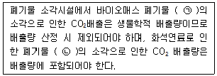
- ㉠ 목재, 폐지 등 ㉡ 공원폐기물, 폐합성고무 등
- ㉠ 음식물, 기저귀, 하수슬러지 등 ㉡ 플라스틱, 폐섬유류 등
- ㉠ 음식물, 목재 등 ㉡ 플라스틱, 합성 섬유, 폐유 등
- ㉠ 목재, 폐지 등 ㉡ 플라스틱, 폐합성고무 등
(정답률: 60%)
55. 아연생산업체 A에서 발생된 온실가스의 양은 690tCO2이었다. 제조된 아연의 양(ton)은? (단, CO2 배출계수 = 1.72tCO2/t-아연, 배출량 산정에 Tier 1A이 적용됨)
- 350
- 400
- 450
- 500
(정답률: 62%)
56. 온실가스 배출권거래제의 배출량 보고 및 인증에 관한 지침상 코크스로를 운영하고 있는 관리업체 A에서 석탄 15만톤을 사용하여 코크스 10만톤을 생산하였다. 온실가스 배출량을 산정할 경우 발생된 온실가스양(tCO2-eq)은? (단, 공정배출계쑤는 CO2 : 0.56tCO2/t 코크스, CH4:0.1gCH4/t코크스)
- 56000.210
- 84000.320
- 140000.530
- 266000.000
(정답률: 48%)
57. 온실가스 배출권거래제의 배출량 보고 및 인증에 관한 지침상 카프로락탐 생산공정에 관한 설명으로 옳지 않은 것은?
- 카프로락탐 생산 시 원료는 싸이클로헥산, 페놀, 톨루엔 3가지로 구분된다.
- 카프로락탐 생산 공정에서 싸이클로헥산은 촉매 존재 하에 싸이클로헥사놀이 70%, 싸이클로헥사논이 30%로 구성되어 있다.
- 싸이클로헥사놀은 탈수소 촉매 하에서 싸이클로헥사논으로 전환된다.
- 보고대상 온실가스는 CO2, N2O이다.
(정답률: 45%)
58. 온실가스 배출권거래제의 배출량 보고 및 인증에 관한 지침상 관리업체인 A매립장에서 고형폐기물의 매립에 따른 온실가스 배출량을 산정할 경우 매개변수별 관리기준에 관한 설명으로 옳지 않은 것은?
- 메탄보정계수(MCF)는 IPCC 가이드라인 기본값을 적용한다.
- 폐기물 성상별 매립양은 1991년 1월 1일 이후 매립된 폐기물에 대해서만 수집한다.
- 메탄으로 전환가능한 DOC비율은 IPCC가이드라인 기본값인 0.5를 적용한다.
- 산화율은 IPCC 가이드라인 기본계수를 사용한다.
(정답률: 74%)
59. 온실가스 배출권거래제의 배출량 보고 및 인증에 관한 지침상 이동연소 중 철도 부문의 보고대상 배출시설이 아닌 것은?
- 고속차량
- 비도로차량
- 전기동차
- 디젤기관차
(정답률: 58%)
60. 저탄소 녹색성장 기본법령상 다음 중 ( )에 들어갈 내용으로 적절한 것은?
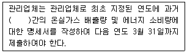
- 1년
- 3년
- 4년
- 5년
(정답률: 72%)
4과목: 온실가스 감축관리
61. 이산화탄소(CO2) 포집기술 중 ‘연소 후 포집기술’에 관한 설명으로 거리가 먼 것은?
- 배가스는 굴뚝을 통해 대기중으로 배출되기 때문에 대기압, 상온에서의 운전이 가능하며, 사용화에 근접해 잇는 기술이다.
- 연소 후 공정에서 배가스의 CO2 농도가 약 70~75% 정도의 수준이기 때문에 CO2와 잘 결합할 수 잇는 화학흡수제를 적용하기에는 곤란한 편이다.
- 액상이 아닌 건식으로 CO2를 흡수시키는 ‘연소 후 건식 CO2 포집공정’도 개발되고 있다.
- 포집비용이 상대적으로 높은 편이나, 기존 발전소에 설치하여 CO2를 줄일 수 있어 시장성 확보에 유리한 편인다.
(정답률: 74%)
62. 강원도 원주시에 10MWh 규모의 태양광 발전소 개발을 검토 중에 있다. 사업의 타당성 조사를 실시한 결과, 태양광 발전소를 설치할 경우의 이용률은 20%로 추정되었으며, 해당 태양광 발전사업을 CDM사업으로 추진하고자 한다. 이 때 예상되는 연간 발전량에 따른 온실가스 감축량(tCO2-eq/yr)은? (단, 사업에 따른 배출 및 누출은 없으며, 소규모 CDM사업으로 가정하고 전력배출계수 0.6060tCO2-eq/MWh)
- 117108
- 20869
- 18834
- 10617
(정답률: 62%)
63. 목재칩(wood chip)의 특성에 관한 설명으로 옳지 않은 것은? (단, 목재펠릿(wood pellet)과 상대비교)
- 연료의 특성이 비균일하다.
- 정제된 원료만 사용하며, 안정적인 공급설비가 가능하다.
- 제조 비용이 저렴한 편이다.
- 저장 규모가 큰 편이다.
(정답률: 59%)
64. CDM 프로젝트 활동으로 인한 온실가스 감축량을 산정하고자 한다. 다음 인자를 이용한 감축량 산정식을 표현한 것으로 옳은 것은?
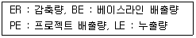
- ER = PE – BE - LE
- ER = BE – PE - LE
- ER = PE – BE + LE
- ER = PE + BE + LE
(정답률: 64%)
65. 고온형 연료전지에 해당하는 것은?
- 직접 메탄올 연료전지
- 용융탄산염 연료전지
- 알칼리 연료전지
- 고분자 전해질막 연료전지
(정답률: 60%)
66. 온실가스 감축목표 설정에 관한 설명으로 옳지 않은 것은?
- 온실가스 감축목표는 기업, 공공기관, 지방자치단체 등의 조직이 일정기간 동안 감축해야 할 정도를 정량적으로 설정하는 것을 말한다.
- 온실가스 감축목표의 설정은 ‘강제적 목표할당에 따른 목표설정’과 ‘자발적 감축활동 선언에 따른 목표설정’으로 구분할 수 있다.
- 온실가스 에너지 목표관리제, 배출권거래제 등은 자발적 감축활동 선언에 따른 목표설정에 해당한다.
- 감축목표의 설정방식은 ‘원단위를 이용하는 방식’과 ‘온실가스 배출 총량을 기반으로 하는 방식’으로 구분할 수 있다.
(정답률: 80%)
67. 온실가스 감축기술의 하나로 연료의 대체에 관한 내용 중 바이오에탄올에 관한 내용으로 옳지 않은 것은?
- 알콜기를 갖고 있고, 발효의 과정을 거친다.
- 오염물질의 발생이 적은 장점이 있다.
- 석유계 디젤과 혼합하여 사용한다.
- 가급적 저렴한 원료를 선정하는 것이 바람직하다.
(정답률: 44%)
68. CDM사업 절차와 수행기관이 잘못 연결된 것은?
- 사업계획서 등록 – CDM 집행위원회
- 사업계획서 타당성 평가 – CDM 운영기구
- 사업감축량 검증 및 인증 – CDM 운영기구
- 크리디트(CERs) 발행 – 국가 CDM 승인기구
(정답률: 60%)
69. 태양광발전의 특징 및 설치조건에 관한 설명으로 옳지 않은 것은?
- 에너지 밀도가 낮은 편이다.
- 기상조건에 따라 출력에 영향을 받는다.
- 교류로 변환하는 과정에서 고조파가 발생한다.
- 효율에 비해 저가이지만, 설치장소가 좁아도 되는 장점이 있다.
(정답률: 77%)
70. 발전소 및 각종 산업에서 발생하는 이산화탄소를 대기로 배출시키기 전에 고농도로 포집·압축·수송하여 안전하게 저장하는 기술로 정의될 수 있는 것은?
- ET
- CCS
- CDM
- VCM
(정답률: 80%)
71. 온실가스를 처리하거나 활용하여 감축하는 기술로 가장 거리가 먼 것은?
- 매립장에서 매립가스를 포집한 후 연소시켜 에너지 발전을 한다.
- 하수처리시설에서 소화조의 가스를 회수하여 소화조 가온용 연료로 재사용한다.
- 음식물쓰레기 사료화, 퇴비화 시설에서 메탄을 회수하여 취사용 연료로 사용한다.
- 대기오염방지시설에서 휘발성 유기화합물을 소각한다.
(정답률: 74%)
72. 바이오가스 시설현황 중 매립지가스(LFG)생성단계에 관한 설명으로 가장 적합한 단계는?
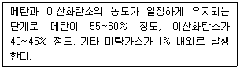
- 호기성 분해단계
- 산생성단계
- 불안정한 메탄생성단계
- 안정된 메탄생성단계
(정답률: 80%)
73. 발전분야의 공정 개선 중 열병합발전(CHP, Combined Heat and Power Generation)에 대한 설명으로 가장 거리가 먼 것은?
- 고온스팀으로는 전기를 생산하며 동시에 중온열을 활용한다.
- 지역난방열 혹은 산업단지 스팀으로 사용하는 에너지 시스템이다.
- 산소를 이용하여 연료를 가스화시켜 합성가스를 제조한 후 연소시켜 터빈으로 발전하는 기술이다.
- 향후 에너지 효율이 90%까지 증가할 수 있는 잠재력을 가지고 있다.
(정답률: 67%)
74. 지구 온난화지수가 높은 온실가스부터 순서대로 옳게 나열한 것은?
- CO2 ＞ CH4 ＞ N2O ＞ SF6
- SF6 ＞ N2O ＞ CH4 ＞ CO2
- SF6＞ CH4 ＞ N2O ＞ CO2
- N2O ＞ SF6 ＞ CO2 ＞ CH4
(정답률: 79%)
75. CDM 사업계획서(PDD)의 구성 항목에 관한 내용으로 옳지 않은 것은?
- 이해관계자 코멘트
- 베이스라인 및 모니터링 방법론의 적용
- 프로젝트 활동 이행기간, 유효기간
- 환경영향
(정답률: 59%)
76. A지방자치단체의 관할구역 내에서 연간 350일 점등하고 있는 가로등 전구 모두를 LED등으로 교체하고자 한다. 관련 자료가 아래 조건과 같을 때, 연간 온실 가스 감축량(tCO2-eq)은? (단, 1tCO2-eq 미만 온실가스 감축량은 무시)
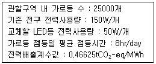
- 3263
- 3527
- 4464
- 5403
(정답률: 58%)
77. 온실가스 감축방법 중 간접 감축방법에 해당하는 것은?
- 탄소배출권 구매
- 대체물질 개발
- 대체공정
- 공정개선
(정답률: 84%)
78. 연료전지의 장·단점으로 가장 거리가 먼 것은?
- 열효율이 높은 편이다.
- 자연환경을 해치지 않는다.
- 다양한 크기로 설치가 가능하고, 탄력적으로 가동할 수 있다.
- 비용대비 효율성이 뛰어나서, 대량 및 다각도의 상용화에 유리하다.
(정답률: 64%)
79. 우리나라 법령에서 정한 신·재생에너지 중 신에너지에 속하는 것은?
- 태양에너지
- 지열에너지
- 풍력
- 수소에너지
(정답률: 75%)
80. 온실가스·에너지 목표관리 운영 등에 관한 지침상 “관리업체가 당해 업체의 조직경계 외부의 배출시설 또는 배출활동 등에서 온실가스 감축, 흡수 또는 제거한 실적”을 의미하는 용어로 가장 적합한 것은?
- 온실가스 감축실적
- 탄소중립실적
- 외부감축실적
- 온실가스 인증실적
(정답률: 67%)
5과목: 온실가스관련 법규
81. 부문별 과장기관과 관장부문이 잘못 연결된 것은?
- 농립축산식품부 – 농업·임업·축산·식품 분야
- 국토교통부 – 건물·모든 교통 분야
- 산업통상자원부 – 산업·발전 분야
- 환경부장관 – 폐기물 분야
(정답률: 52%)
82. 저탄소 녹색성장 기본법상 저탄소 녹색성장 실현을 위한 지방자치단체의 책무와 거리가 먼 것은?
- 각종 정책을 수립할 때 경제와 환경의 조화로운 발전 및 기후변화에 미치는 영향 등을 종합적으로 고려하여야 하며, 국제적인 기후변화대응 및 에너지·자원 개발협력에 능동적으로 참여하여야 한다.
- 지역주민에게 저탄소 녹색성장에 대한 교육과 홍보를 강화하여야 한다.
- 저탄소 녹색성장 대책을 수립·시행할 때 해당 지방자치단체의 지역적 특성과 여건을 고려하여야 한다.
- 관할구역 내의 사업자, 주민 및 민간단체의 저탄소 녹색성장을 위한 활동을 장려하기 위하여 정보제공, 재정지원 등 필요한 조치를 강구하여야 한다.
(정답률: 78%)
83. 온실가스 배출권의 할당 및 거래에 관한 법령상 국가 온실가스 감축목표를 효과적으로 달성하기 위하여 계획기간별로 국가 배출권 할당계획을 수립하여야 하는 시기는 매 계획기간 시작 몇 개월 전까지인가?
- 3개월
- 4개월
- 5개월
- 6개월
(정답률: 44%)
84. 온실가스 배출권의 할당 및 거래에 관한 법령상 배출권 거래소의 업무가 아닌 것은?
- 배출권 거래시장의 개설·운영
- 배출권거래중개회사의 등록 취소에 관한 업무
- 배출권의 매매(경매를 포함한다.) 및 청산 결제
- 불공정거래에 관한 심리 및 회원의 감리
(정답률: 37%)
85. 다음 중 온실가스에 해당되지 않은 것은?
- 메탄
- 육불화황
- 이산화질소
- 과불화탄소
(정답률: 83%)
86. 저탄소 녹색성장 기본법령상 온실가스·에너지 목표관리의 원칙 및 역할에 대한 설명으로 가장 거리가 먼 것은?
- 환경부장관은 관리업체의 온실가스 감축 목표의 설정·관리 등에 관하여 총괄·조정기능을 수행한다.
- 환경부장관은 목표관리의 신뢰성을 높이기 위하여 필요한 경우에는 부문별 관장기관의 소관 사무에 대하여 종합적인 점검·평가를 할 수 있다.
- 환경부장관은 관리업체의 온실가스 감축 및 에너지 절약 목표 등의 이행실적, 명세서 신뢰성 여부 등에 중대한 문제가 있다고 인정되는 경우 단독으로 관리업체에 실태조사를 실시하여야 한다.
- 부문별 관장기관은 소관 부문별로 목표의 설정·관리 및 필요한 조치에 관한 사항을 관장하되, 관리업체의 목표가 국가 온실가스 감축목표의 세부 감축 목표에 부합하도록 하여야 한다.
(정답률: 65%)
87. 배출량의 보고 및 검증과 관련하여 할당대상업체가 제출하는 명세서에 포함되지 않은 것은?
- 업체의 업종, 매출액, 공정도, 시설배치도 등 총괄 정보
- 온실가스 사용·감축 실적 및 온실가스·에너지의 판매·구매 등 이동 정보
- 사업장 고유 배출계수의 개발 결과
- 공정별, 생산품별 온실가스 사용량 및 에너지 배출량(벤치마크방식으로 배출권을 할당하는 경우는 제외)
(정답률: 40%)
88. 배출량 인증위원회는 위원장 1명을 포함하여 16인 이내의 위원으로 구성한다. 인증위원회의 위원장은?
- 환경부차관
- 기획재정부 1차관
- 산업통상자원부 차관
- 국토교통부 차관
(정답률: 56%)
89. 저탄소 녹색성장 기본법 시행령상 관리업체의 지정기준 등에 관한 설명으로 옳지 않은 것은?
- 부문별 관장기관은 대통령령으로 정하는 기준량 이상의 온실가스 배출업체 및 에너지 소비업체를 관리업체의 대상으로 선정하고, 그 관련자료를 첨부하여 매년 4월 30일까지 환경부장관에게 통보하여야 한다.
- 환경부장관은 관리업체 선정의 중복·누락, 규제의 적절성 등을 확인한 후 부문별 관징가관에게 통보하고, 통보를 받은 부문별 관장기관은 매년 6월 30일까지 관리업체를 지정하여 관보에 고시한다.
- 관리업체는 관리업체 지정에 이의가 있는 경우 고시된 날부터 60일 이내에 부문별 관장기관에게 소명자료를 첨부하여 이의를 신청할 수 있다.
- 부문별 관장기관은 이의신청을 받았을 때에는 이에 관하여 재심사하고 환경부장관의 확인을 거쳐 이의신청을 받은 날부터 30일 이내에 그 결과를 해당 관리업체에 통보하여야 한다.
(정답률: 72%)
90. 온실가스 배출권 거래제 하에서 배출권 거래시장 안정화 조치 기준으로 옳은 것은?
- 최근 1개월의 평균 거래량이 직전 2개 연도의 같은 월 평균 거래량 중 많은 경우보다 1.5배 이상으로 증가한 경우
- 최근 1개월의 평균 가격이 직전 2개 연도의 배출권 평균가격보다 1.5배 이상 높은 경우
- 최근 1개월의 배출권 평균 가격이 직전 2개 연도의 배출권 평균 가격의 100분의 60이하가 된 경우
- 배출권가격이 유럽연합(EU)의 배출권 각격보다 2배 이상 높은 경우
(정답률: 60%)
91. 저탄소 녹색성장 기본법령상 관리업체가 매년 제출하여야 하는 온실가스 배출량 및 에너지 소비량에 관한 명세서에 포함되어야 하는 사항이 아닌 것은?
- 명세서에 관한 품질관리 절차
- 업체의 규모, 생산설비, 제품원료 및 생산량
- 배출권의 할당 대상이 되는 부문 및 업종에 관한 사항
- 포집·처리한 온실가스의 종류 및 양
(정답률: 46%)
92. 온실가스·에너지 목표관리 운영 등에 관한 지침상 조기감축으로 매년 인정받을 수 있는 전체 총량은 전체 관리업체 배출허용량의 몇%에 해당하는가?
- 1%
- 2%
- 3%
- 5%
(정답률: 69%)
93. 신에너지 및 재생에너지 개발·이용·보급 촉진법령상 신에너지 또는 재생에너지가 아닌 것은?
- 연료전지
- 수력
- 폐열
- 지열에너지
(정답률: 58%)
94. 저탄소 녹색성장 기본법령상 지방녹색성장 위원회의 구성에 관한 사항이다. ( )안에 가장 적합한 것은?
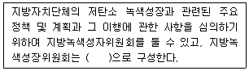
- 위원장 1명을 포함한 10명 이내의 위원
- 위원장 1명을 포함한 20명 이내의 위원
- 위원장 1명을 포함한 25명 이내의 위원
- 위원장 2명을 포함한 50명 이내의 위원
(정답률: 73%)
95. 온실가스·에너지 목표관리 운영 등에 관한 지침상 건물이 건축물 대장 또는 등기부에 각각 등재되어 있거나 소유지분을 달리하고 있는 경우에 건축물에 대한 특례기준으로 옳지 않은 것은?
- 건물의 소유구분이 지분형식으로 되어 있을 경우에는 최대 지분을 보유한 법인 등을 당해 건물의 소유자로 본다.
- 인접 또는 연접한 대지에 동일 법인이 여러 건물을 소유한 경우에는 한 건물로 본다.
- 에너지관리의 연계성이 있는 복수의 건물 등은 한 건물로 보며, 동일 부지 내 있거나 인접 또는 연접한 집합건물이 동일한 조직에 의해 에너지 공급·관리 또는 온실가스 관리 등을 받을 경우에도 한 건물로 간주한다.
- 동일 건물에 구분 소유자와 임차인에 있는 경우에는 각각의 건물로 본다.
(정답률: 78%)
96. 저탄소 녹색성장 기본법령상 ‘기후변화대응기본계획’에 대한 설명으로 틀린 것은?
- 정부는 20년을 계획기간으로 하는 기후변화대응 기본계획을 5년마다 수립·시행해야 한다.
- 기후변화대응 기본계획을 수립·변경하는 경우에는 위원회 심의 및 국무회의 심의를 거쳐야 한다. 다만, 대통령령으로 정하는 경미한 사항을 변경하는 경우에는 제외한다.
- 기후변화대응 기본계획에는 온실가스 감축사업에 대한 방법론 개발계획이 포함되어야 한다.
- 기후변화대응 인력양성에 대한 사항이 기후변화대응 기본계획에 포함되어야 한다.
(정답률: 27%)
97. 온실가스·에너지 목표관리 운영 등에 관한 지침상 부문별 관장기관은 관리업체가 목표달성을 못하거나, 제출한 이행실적이 미흡한 경우에는 개선명령을 하여야 한다. 부문별 관장기관은 개선명령 등 관리업체에 대해 필요한 조치를 하고, 그 결과를 작성하여 누구에게 통보하여야 하는가?
- 대통령
- 국무총리
- 기획재정부장관
- 환경부장관
(정답률: 70%)
98. ‘녹색기술·녹색산업의 표준화 및 인증’과 관련된 사항 중 옳은 것은?
- 정부는 국내에서 개발된 기술이 국제 표준화에 부합되도록 표준화 기반 구축을 지원할 수 있고, 개발단계의 기술 등은 개발 이전에 표준화 취득을 의무화한다.
- 녹색기술의 표준화, 인증 및 취소 등에 관하여 그밖에 필요한 사항은 산업통상자원부장관령으로 정한다.
- 기업은 녹색기술 및 녹색산업의 적합성에 대해 제3자 검증을 의무적으로 추진해야한다.
- 정부는 녹색기술·녹색산업의 발전을 촉진하기 위하여 적합성 인증을 하거나, 공공기관의 구매 의무화 또는 기술지도 등을 할 수 있다.
(정답률: 45%)
99. 저탄소 녹색성장 기본법령상 온실가스 감축과 에너지 절약 및 에너지 이용을 효율적으로 하기 위한 온실가스·에너지 목표관리에 관한 총괄·조정기능을 수행하는 자는?
- 기획재정부장관
- 국무조정실장
- 환경부장관
- 산업통상자원부장관
(정답률: 75%)
100. 온실가스·에너지 목표관리 운영 등에 관한 지침상 관리업체가 조기감축실적에 대하여 인정을 받고자 하는 경우 조기감축실적 인정 신청서를 작성하여 관리업체별로 부문별 관장기관에게 제출하여야 하는 기간(기준)은?
- 최초 지정된 해의 7월 31일까지
- 최초 지정된 해의 12월 31일까지
- 최초 지정된 해의 다음 연도 7월 31일까지
- 최초 지정된 해의 다음 연도 12월 31일까지
(정답률: 57%)